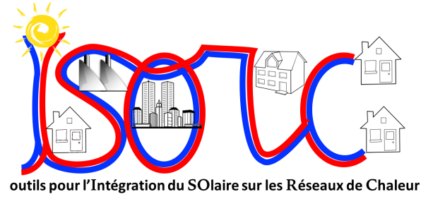

ISROC : Outils pour l'Integration du SOlaire dans les Réseaux de Chaleur
Résumé

Le projet ISORC vise la création d'outils pour dimensionner et optimiser en phase conception et pour améliorer la phase exploitation des réseaux de chaleur intégrant une ou des productions solaires thermiques.
L'outil d'optimisation en phase conception est le premier outil d'optimisation couplant à la fois les réseaux de chaleur, le solaire et le stockage inter-saisonnier. Il utilisera des modèles linéaires et simplifiés afin de pouvoir prendre en compte la variabilité de la ressource solaire (multi-période) sans toutefois être trop complexes ou lourds. L'outil sera utilisable pour de multiples configurations de réseaux de chaleur neufs ou existants, raccordés à des installations solaires et à d'autres producteurs d'énergie (bois, gaz, fioul, ...) ainsi qu'à des stockages journaliers et/ou inter-saisonniers. L'utilisation de méthodes mathématiques d'optimisation permettra de prendre en compte le très grand nombre de variables et de paramètres auxquels doivent faire face les ingénieurs lors de la conception de tels systèmes. L'outil d'optimisation sera, pendant le projet, testé sur différents cas d'application réels. Il sera conçu et réalisé de façon à permettre, à l'issue du projet : d'abord d'être encapsulé en vu d'une commercialisation ou d'une mise à disposition gratuite par un organisme tiers ou un des participants du projet, ensuite d'être utilisé par les ingénieurs en charge de concevoir et d'exploiter des réseaux de chaleur.
Les outils d'amélioration de l'exploitation seront développés afin de proposer aux opérateurs de réseaux des solutions pour améliorer la gestion de leurs différents moyens de production, en particulier pour tirer le meilleur profit de leur(s) installation(s) solaire(s). Des guides de bonne pratique seront mis à disposition des utilisateurs. Les dysfonctionnements potentiels des centrales solaires sur réseau de chaleur seront présentés et analysés pour identifier les chaînes d'actions à mettre en œuvre. Le processus d'action visera un optimum technico-économique. Des algorithmes pour la détection automatique des dysfonctionnements seront créés. Les bonnes pratiques d'exploitation seront intégrées dans l'outil d'optimisation sous forme de contraintes à respecter.
Pour l'ensemble du projet, les enjeux de tous les acteurs de la chaîne de valeur seront considérés afin que les outils développés leur soient utiles. Les opérateurs énergétiques, les collectivités et les concepteurs techniques pourront ainsi considérer le solaire sur réseau de chaleur comme une des options à intégrer dans l'évaluation des investissements prioritaires à mener.